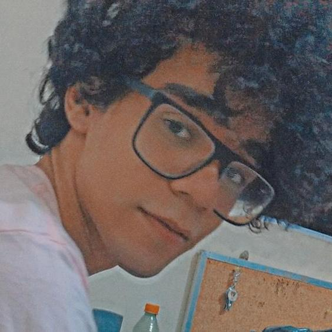
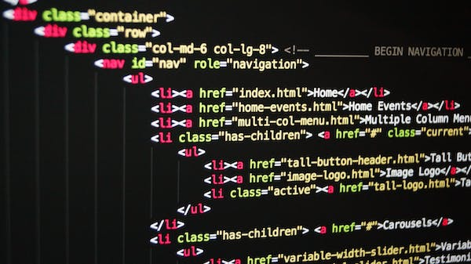

Sobre mim

Isaac Gonçalves
Sou uma pessoa que gosta de aprender e compartilhar conhecimento. Gosto de transformar ideias em projetos práticos e acredito que à disciplina, é a chave para alcançar resultados consistentes.
Nos meus projetos, busco sempre unir simplicidade e propósito, criando soluções que façam diferença.
No dia-a-dia, gosto de jogar video-games, o que me ajuda a ter criatividade, enquanto estou me divertindo.
Formação

SENAI
Minha trajetória educacional começou no SENAI em 2022, onde tive a oportunidade de mergulhar em uma formação prática e voltada para o mercado. Foi lá que aprendi a importância da disciplina e da aplicação direta do conhecimento, desenvolvendo habilidades técnicas que me aproximaram da realidade e me mostraram como transformar teoria em prática. Essa experiência me deu uma base sólida e despertou em mim o gosto por aprender de forma aplicada.
UNINTER
Mais tarde,em 2024 e até este presente momento, segui para a UNINTER, onde aprofundei minha formação acadêmica. A graduação me trouxe uma visão mais ampla e estratégica, complementando o aprendizado prático que já carregava comigo. Aqui, estou podendo desenvolver competências voltadas para análise crítica, gestão e inovação, além de participar de atividades que ampliaram minha percepção sobre o mercado e a sociedade. Essa etapa esta sendo essencial para consolidar minha carreira profissional.
Portifólio
Aqui esta é o meu espaço no GitHub com alguns dos meus projetos (https://github.com/isaacgoncod?tab=repositories). Onde compartilho projetos que refletem minha trajetória de aprendizado e prática.
Este projeto foi desenvolvido com base em um desafio real, a partir da Atividade Extensionista da UNINTER. A ideia principal foi criar um site que ajuda na preservação de um parque natural próximo a onde moro. Segue abaixo algumas imagens de como o site ficou: